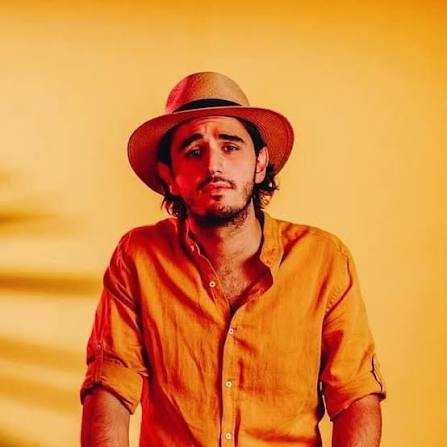
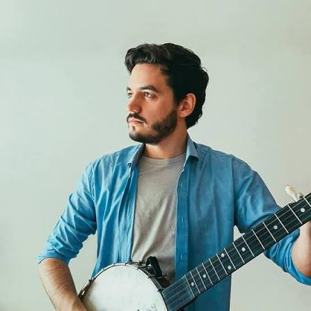
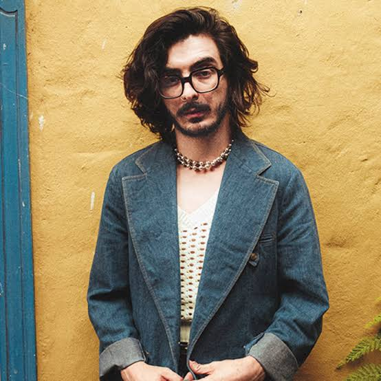
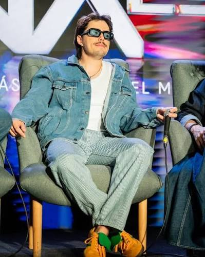

Conoce a los integrantes de morat
Morat está formada por cuatro músicos colombianos que comparten su pasión por la música. Cada uno cumple un papel importante dentro de la banda y juntos lograron crear un estilo musical propio.
Integrante 1 - Juan Pablo Isaza
Una de las voces principales
Juan Pablo Isaza es uno de los vocalistas de Morat. También toca la guitarra y participa en la composición de muchas de las canciones de la banda.
Su participación en la banda
- Voz principal.
- Guitarra.
- Composición de canciones.

Integrante 2 - Juan Pablo Villamil
La voz y los instrumentos
Juan Pablo Villamil es otro de los vocalistas de Morat. Se destaca por tocar el banjo y la guitarra, instrumentos que forman parte del sonido característico de la banda.
Su participación en la banda
- Voz principal.
- Banjo.
- Guitarra.

Integrante 3 - Simón Vargas
El bajo de la banda
Simón Vargas es uno de los integrantes de Morat. Se encarga principalmente del bajo y también participa en los coros. Además, es parte importante de la identidad musical del grupo.
Su participación en la banda
- Bajo.
- Coros.
- Composición musical.

Integrante 4 - Martín Vargas
El ritmo de Morat
Martín Vargas es el baterista de la banda. Su instrumento es fundamental para acompañar las canciones y darle ritmo a la música de Morat.
Su participación en la banda
- Batería.
- Percusión.
- Coros.
